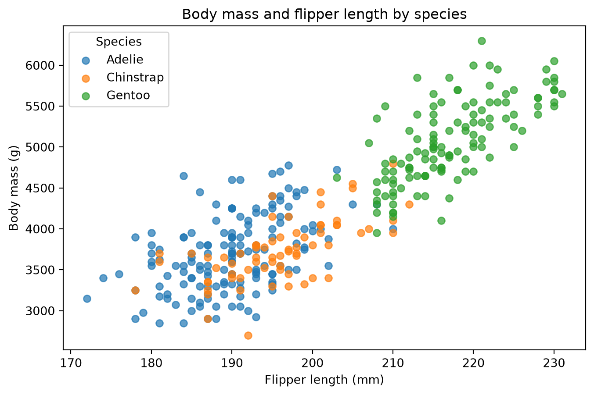

import sys
print(sys.executable)C:\Users\Yuvraj Singh Walia\Documents\521\DSCI_521-milestone_2\yuvrajw.github.io\.venv\Scripts\python.exeYuvraj Singh Walia
September 23, 2026
In this post, I explore the Palmer Penguins dataset using Python. I will compare the body measurements of different penguin species and investigate the relationship between flipper length and body mass.
Data: Palmer Penguins, Palmer Station Antarctica LTER.
The Palmer Penguins dataset was collected by Dr. Kristen Gorman and the Palmer Station Long Term Ecological Research program. The dataset is available under the CC0 licence.
First, I check which Python executable is being used when this post is rendered.
C:\Users\Yuvraj Singh Walia\Documents\521\DSCI_521-milestone_2\yuvrajw.github.io\.venv\Scripts\python.exeThe path should point to the .venv directory inside this repository.
I load the Palmer Penguins dataset and inspect the first few observations.
| species | island | bill_length_mm | bill_depth_mm | flipper_length_mm | body_mass_g | sex | year | |
|---|---|---|---|---|---|---|---|---|
| 0 | Adelie | Torgersen | 39.1 | 18.7 | 181.0 | 3750.0 | male | 2007 |
| 1 | Adelie | Torgersen | 39.5 | 17.4 | 186.0 | 3800.0 | female | 2007 |
| 2 | Adelie | Torgersen | 40.3 | 18.0 | 195.0 | 3250.0 | female | 2007 |
| 3 | Adelie | Torgersen | NaN | NaN | NaN | NaN | NaN | 2007 |
| 4 | Adelie | Torgersen | 36.7 | 19.3 | 193.0 | 3450.0 | female | 2007 |
Before comparing the penguin species, I first examine the size of the dataset, the available variables, and the amount of missing data.
Number of observations: 344
Number of variables: 8species 0
island 0
bill_length_mm 2
bill_depth_mm 2
flipper_length_mm 2
body_mass_g 2
sex 11
year 0
dtype: int64The dataset contains measurements and identifying information for individual penguins. Checking the missing values is important because incomplete observations could affect calculations involving body measurements.
I will focus on species, flipper length, and body mass. I remove observations that are missing either of the two numerical measurements needed for the analysis.
Rows before removing missing values: 344
Rows after removing missing values: 342| species | flipper_length_mm | body_mass_g | |
|---|---|---|---|
| 0 | Adelie | 181.0 | 3750.0 |
| 1 | Adelie | 186.0 | 3800.0 |
| 2 | Adelie | 195.0 | 3250.0 |
| 4 | Adelie | 193.0 | 3450.0 |
| 5 | Adelie | 190.0 | 3650.0 |
After removing observations with missing flipper-length or body-mass values, the remaining data can be used to compare the three penguin species and study the relationship between these measurements.
Next, I calculate the number of penguins and the average flipper length and body mass for each species.
| number_of_penguins | mean_flipper_length_mm | mean_body_mass_g | |
|---|---|---|---|
| species | |||
| Adelie | 151 | 190.0 | 3700.7 |
| Chinstrap | 68 | 195.8 | 3733.1 |
| Gentoo | 123 | 217.2 | 5076.0 |
The summary shows clear differences between the three species. Gentoo penguins have the greatest average body mass and the longest average flipper length, while Adelie penguins are smaller on average. Chinstrap penguins fall between the other two species for these measurements.
To investigate whether larger penguins tend to have longer flippers, I plot flipper length against body mass and distinguish the points by species.
fig, ax = plt.subplots(figsize=(8, 5))
for species, group in analysis_penguins.groupby("species", observed=True):
ax.scatter(
group["flipper_length_mm"],
group["body_mass_g"],
label=species,
alpha=0.7
)
ax.set_xlabel("Flipper length (mm)")
ax.set_ylabel("Body mass (g)")
ax.set_title("Body mass and flipper length by species")
ax.legend(title="Species")
plt.show()
The plot shows a positive relationship between flipper length and body mass. Penguins with longer flippers generally have greater body mass. The species also form distinct groups, with Gentoo penguins tending to be both heavier and longer-flippered than Adelie and Chinstrap penguins.
The scatter plot suggests that flipper length and body mass are positively related. I calculate the correlation between these two measurements for each species to quantify that relationship.
species
Adelie 0.468
Chinstrap 0.642
Gentoo 0.703
Name: correlation, dtype: float64A positive correlation means that penguins with longer flippers also tend to have greater body mass within that species. Comparing the values across the three species shows whether this relationship is similar or different among Adelie, Chinstrap, and Gentoo penguins.
This analysis explored body measurements in the Palmer Penguins dataset using Python. After checking and cleaning the data, I compared average flipper length and body mass across species and visualized the relationship between these two measurements.
The results show clear differences in body size among the penguin species. The scatter plot and correlation calculations also show that flipper length and body mass are positively associated within the data. Overall, the analysis demonstrates how data cleaning, grouping, summary statistics, and visualization can be used together to investigate patterns in a biological dataset.